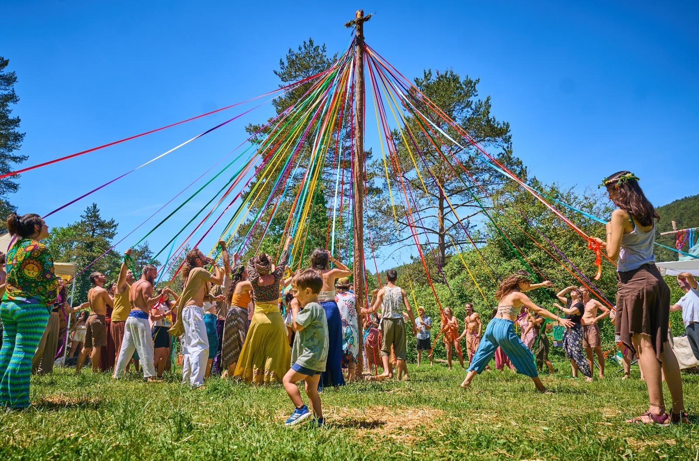
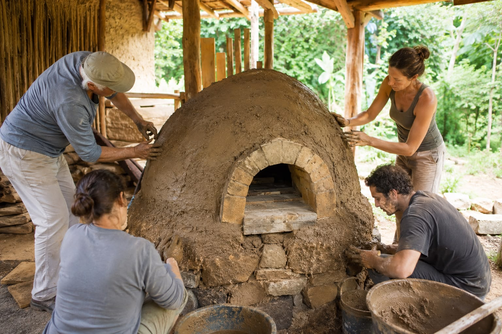
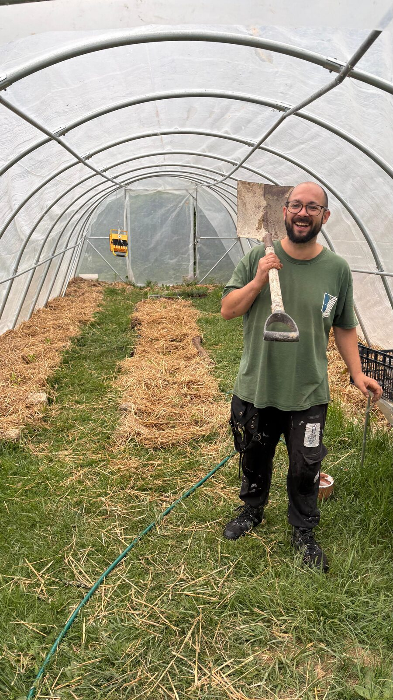
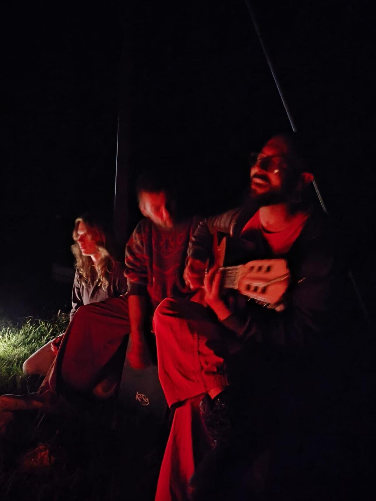
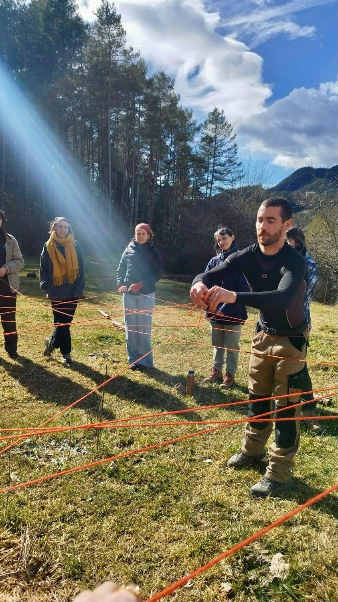
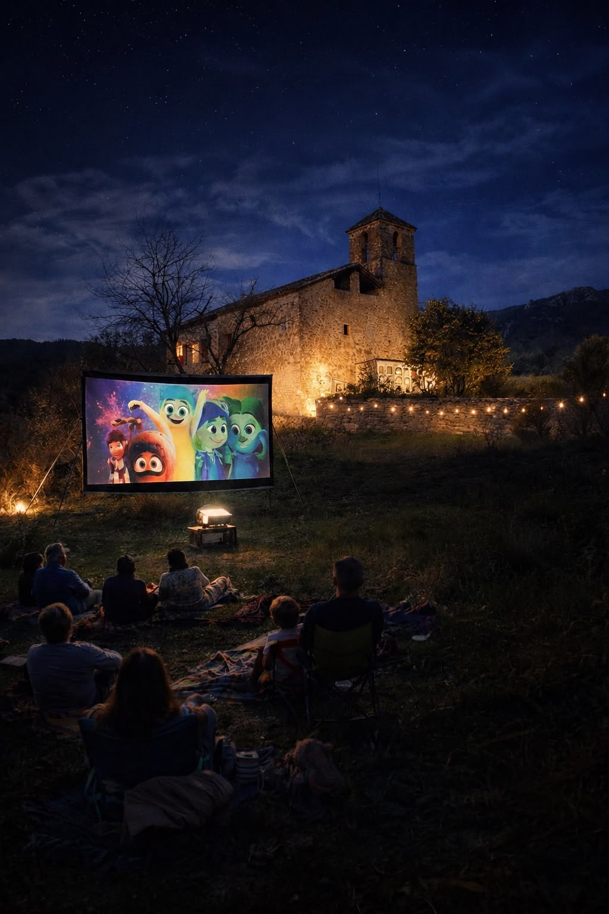
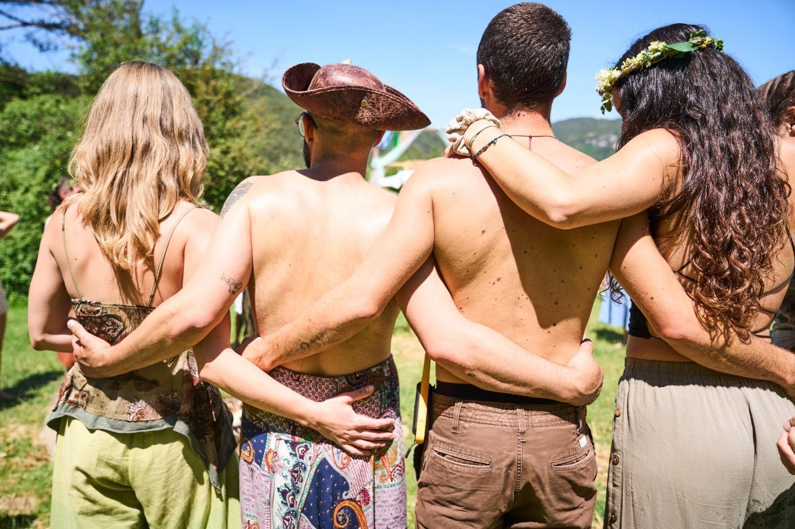

Activitats
Vinguis quan vinguis, sempre hi passa alguna cosa. I sempre hi ha lloc per a un parell de mans més.
Ets tallerista?
Acollim tallers i activitats els caps de setmana, de divendres a diumenge. Tria un cap de setmana lliure i escriu-nos amb la teva proposta.
Pròxima activitat
La revetlla més màgica de l'any: foguera, música i sopar compartit sota les estrelles, vora la masia. Una nit per celebrar l'arribada de l'estiu, oberta a totes les edats i sense alcohol ni fum.
Nit de Sant Joan · Castellar del Riu
Vull venir
Aixeca una paret amb terra, palla, fusta i calç. Surt de la jornada cansat, ple de pols i somrient.

Disseny de l'hort, compostatge i sobirania alimentària. Sembrar avui per menjar demà.

Concerts, cinema a la fresca, exposicions i trobades entre els arbres que omplen la nit.

Estades per aprendre fent i formar part de la vida diària de la casa, dia rere dia.

Projeccions a l'aire lliure les nits d'estiu, vora l'església. Per a totes les edats.

Festes de temporada, mercats i jornades obertes a tothom, com el Sant Joan a Cal Niu.
Aixecar una paret amb les teves mans enganxa més del que sembla.— un cap de setmana de bioconstrucció
T'esperem
Escriu-nos per reservar plaça i t'expliquem les pròximes dates.
Escriu-nos